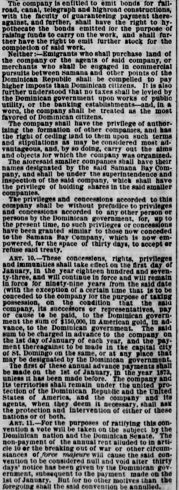
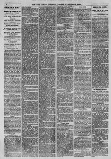

The company and i territories shall remain under the united proctlonLa compañía y sus territorios permanecerán bajo la protección unida
The New York Herald. New York [N.Y.], January 18, 1873. Page 4. Also published as the New York Daily Herald. Published by James Gordon Bennett. A daily newspaper, 1840–1920.The New York Herald. New York [N.Y.], 18 de enero de 1873. Página 4. También publicado como New York Daily Herald. Publicado por James Gordon Bennett. Periódico diario, 1840–1920. View the originalVer el original


See the full pageVer la página completaThe New York Herald reported on the terms of a convention involving territories under the joint protection of the Dominican Republic and the United States, as well as the Samaná Bay Company. According to Articles 11 through 13, the convention requires ratification by the Dominican nation and Senate, specifies conditions for nullification—such as war or force majeure following an annual rent payment—and outlines the Dominican Republic's jurisdiction and its agreement to provide the company with necessary documents and security.The New York Herald informó sobre las estipulaciones de una convención referente a territorios bajo la tutela compartida de la República Dominicana y los Estados Unidos, junto con la Samaná Bay Company. Conforme a los artículos 11 al 13, el instrumento requería la ratificación del pueblo y del Senado dominicanos, fijaba causales de rescisión —como el sobrevenimiento de guerra o fuerza mayor tras el cobro del canon anual de arriendo— y deslindaba la jurisdicción de la República Dominicana y su obligación de suministrar títulos fehacientes y garantías de seguridad a la compañía.
FULL TEXT:TEXTO COMPLETO:
The New York Herald January 18, 187318 de enero de 1873
The company is entitled to emit bonds for railroad, canal, telegraph and highroad constructions, with the faculty of guaranteeing payment there-against, and further, shall have the right to hypothecate the bonds emitted for the purpose of raising funds to carry on the work, and shall further have the right to emit further stock for the completion of said work.La compañía está facultada para emitir bonos para construcciones de ferrocarriles, canales, telégrafos y carreteras, con la facultad de garantizar el pago contra ellos, y además, tendrá el derecho de hipotecar los bonos emitidos con el propósito de recaudar fondos para llevar adelante la obra, y además tendrá el derecho de emitir más acciones para la terminación de dicha obra.
Neither:—Emigrants who shall purchase land of the company or the agents of said company, or merchants who shall be engaged in commercial pursuits between Samana and other points of the Dominican Republic shall be compelled to pay higher imposts than Dominican citizens. It is also further understood that no taxes shall be levied by the Dominican government upon works of public utility, or the banking establishments—and, in a word, the company shall be treated as the most favored of Dominican citizens.Tampoco:—Los emigrantes que compren tierra de la compañía o de los agentes de dicha compañía, o los comerciantes que se dediquen a actividades comerciales entre Samaná y otros puntos de la República Dominicana serán obligados a pagar impuestos más altos que los ciudadanos dominicanos. Se entiende además que no se cobrarán impuestos por el gobierno dominicano sobre las obras de utilidad pública, ni los establecimientos bancarios—y, en una palabra, la compañía será tratada como el más favorecido de los ciudadanos dominicanos.
The company shall have the privilege of authorizing the formation of other companies, and has the right of ceding land to them upon such terms and stipulations as may be considered most advantageous, and, by so doing, carry out the aims and objects for which the company was organized.La compañía tendrá el privilegio de autorizar la formación de otras compañías, y tiene el derecho de cederles tierra bajo los términos y estipulaciones que se consideren más ventajosos, y, al hacerlo, llevar a cabo los fines y objetos para los cuales la compañía fue organizada.
The aforesaid smaller companies shall have their names designated by the said Samana Bay Company, and shall be under the superintendence and inspection of the said company, which shall have the privilege of holding shares in the said smaller companies.Las compañías menores antedichas tendrán sus nombres designados por la dicha Compañía de la Bahía de Samaná, y estarán bajo la superintendencia e inspección de dicha compañía, que tendrá el privilegio de poseer acciones en dichas compañías menores.
The privileges and concessions accorded to this company shall be without prejudice to privileges and concessions accorded to any other person or persons by the Dominican government, for, up to the present time, no such privileges or concessions have been granted similar to those now conceded to the Samana Bay Company, which is now empowered, for the space of thirty days, to accept or refuse said treaty.Los privilegios y concesiones acordados a esta compañía serán sin perjuicio de privilegios y concesiones acordados a cualquier otra persona o personas por el gobierno dominicano, pues, hasta el presente momento, no se han otorgado tales privilegios ni concesiones similares a los ahora concedidos a la Compañía de la Bahía de Samaná, que ahora está facultada, por el espacio de treinta días, para aceptar o rechazar dicho tratado.
ART. 10.—These concessions, rights, privileges and immunities shall take effect on the first day of January, in the year eighteen hundred and seventy-three, and will continue in force and will remain in force for ninety-nine years from the said date (with the exception of a certain time that is to be conceded to the company for the purpose of taking possession, on the condition that the said company, its successors or representatives, pay or cause to be paid, to the Dominican government the sum of $150,000, in American gold, in advance, to the Dominican government. The said sum to be charged in advance to the company on the 1st day of January of each year, and the payment thereagainst to be made in the capital city of St. Domingo on the same, or at any place that may be designated by the Dominican government.ART. 10.—Estas concesiones, derechos, privilegios e inmunidades entrarán en vigor el primer día de enero, en el año mil ochocientos setenta y tres, y continuarán en vigor y permanecerán en vigor por noventa y nueve años desde dicha fecha (con la excepción de cierto tiempo que ha de concederse a la compañía con el propósito de tomar posesión, bajo la condición de que dicha compañía, sus sucesores o representantes, paguen o hagan pagar, al gobierno dominicano la suma de $150,000, en oro estadounidense, por adelantado, al gobierno dominicano. Dicha suma será cargada por adelantado a la compañía el 1 de enero de cada año, y el pago contra ella se hará en la ciudad capital de Santo Domingo en el mismo, o en cualquier lugar que pueda ser designado por el gobierno dominicano.
The first of these annual advance payments shall be made on the 1st of January, in the year 1873, unless it has been made before. The company and its territories shall remain under the united protection of the Dominican Republic and the United States of America, and the company and its agents, when they deem it necessary, shall ask the protection and intervention of either of these nations or of both.El primero de estos pagos anuales por adelantado se hará el 1 de enero, en el año 1873, a menos que se haya hecho antes. La compañía y sus territorios permanecerán bajo la protección unida de la República Dominicana y los Estados Unidos de América, y la compañía y sus agentes, cuando lo consideren necesario, solicitarán la protección e intervención de cualquiera de estas naciones o de ambas.
ART. 11.—For the purposes of ratifying this convention a vote will be taken on the subject by the Dominican nation and the Dominican Senate. The non-payment of the annual rent alluded to in article 10 or the breaking out of war or other circumstances of force majeure will cause the said convention to be considered null and void after thirty days' notice has been given by the Dominican government.ART. 11.—Para los fines de ratificar esta convención se tomará un voto sobre el tema por la nación dominicana y el Senado dominicano. La falta de pago de la renta anual aludida en el artículo 10 o el estallido de una guerra u otras circunstancias de fuerza mayor harán que dicha convención sea considerada nula y sin valor después de que el gobierno dominicano haya dado aviso con treinta días de antelación.